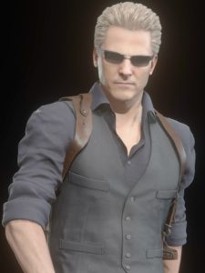

Albert Wesker
Albert Wesker é um dos vilões mais icônicos da série Resident Evil. Originalmente um membro da equipe S.T.A.R.S., Wesker traiu seus colegas e se tornou um antagonista central na franquia. Ele é conhecido por sua inteligência estratégica, habilidades de combate excepcionais e sua busca implacável pelo poder. Wesker possui habilidades sobre-humanas devido a experimentos com o vírus T, o que o torna um adversário formidável. Sua personalidade fria e calculista, combinada com sua ambição desmedida, faz dele uma figura memorável na narrativa de Resident Evil. Ao longo dos jogos, Wesker desempenha um papel crucial em muitos dos eventos que moldam o universo da série.